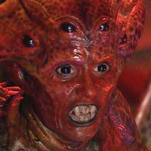

| Home | The Doctors | The Companions | The Villians | Show History |
|
|
The Empress of RacnossThe Empress of the Racnoss featured in "The Runaway Bride" (2006) and as archive footage in "Turn Left" (2008). She was killed when Harold Saxon ordered her ship to be shot down after the Doctor had drowned her children by draining the Thames. Her appearance resembled that of a huge red humanoid spider. She was portrayed by Sarah Parish. The racnoss are an ancient spider-like species which date back to the beginning of time. Their ship became the centre of the earth as the process of evolution took place. In "The Runaway Bride", the Empress uses H.C. Clements to drill a hole into the centre of the earth where her offspring are located and the Doctor mentions that he thought the Time Lords had destroyed the racnoss eons ago. |
Brendan Davey Monica DuCong'e Erik Eyler Kayleen Garcia Katherine Hyche Ryan Moeller |
Christine O'Brien Dilman Alex Recinos Julia Schwartz Madeleine Schwartz Ann Marie Skjold Ashly Wilkins |
[Reference Links] |